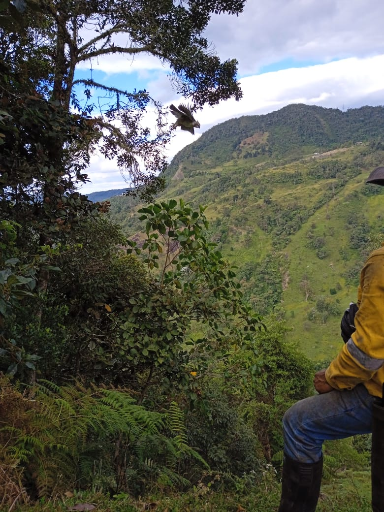
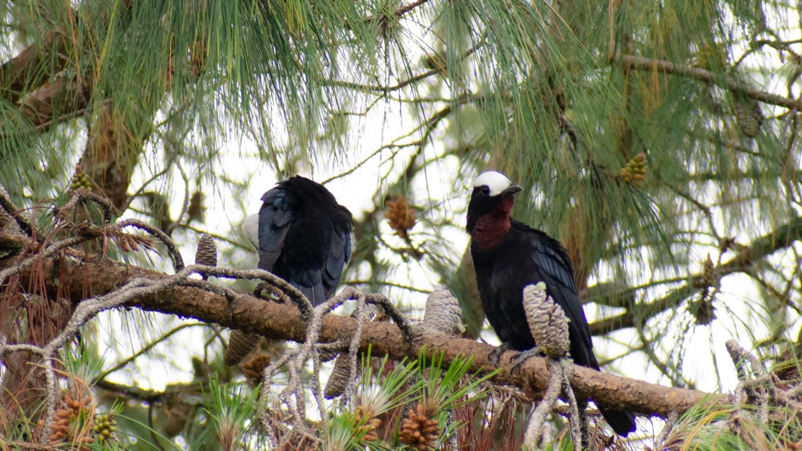
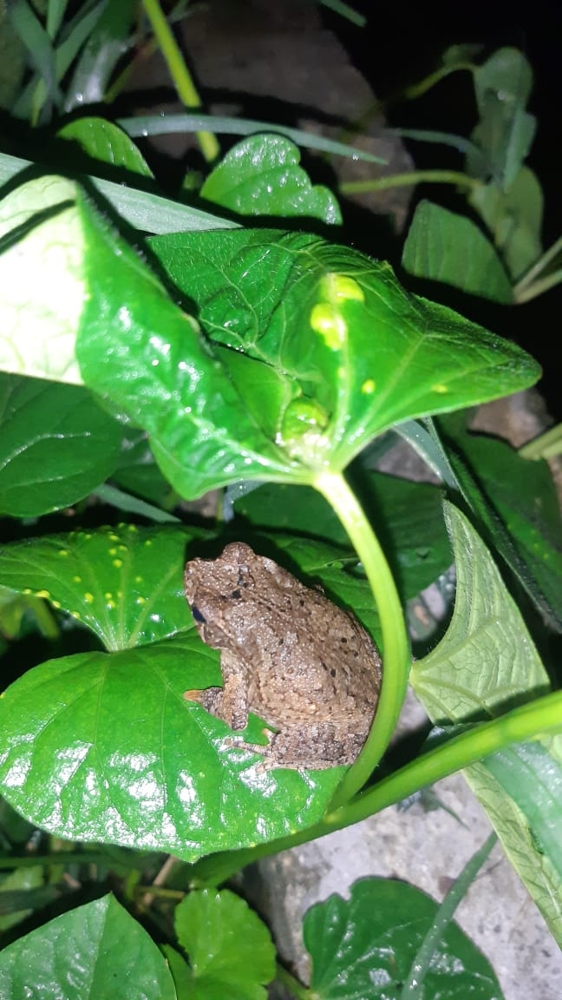
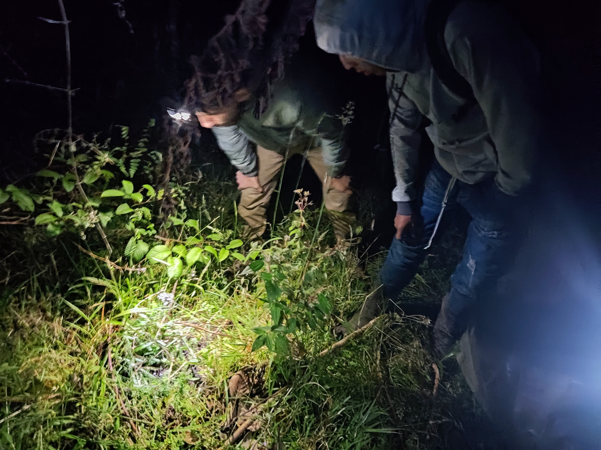

01
Contexto territorial
Zona de Reserva Campesina de la Montaña Caucana
Relación territorial de la ZRC con los municipios de Inzá, Totoró y Silvia.

Cuidadoras y cuidadores de la montaña, la vida y el territorio
Explorar ↓
Por la cultura ambiental pues yo la definiría más como un estilo de vida, porque la cultura está muy relacionada con la forma en la que uno vive, con la forma como uno se identifica también y como decide hacer cada cosa diariamente.
Cultura ambiental, es como cuidamos las fuentes de agua, pues ese es uno de los puntos más primordiales, porque la supervivencia del ser humano es el agua y parte fundamental, sino hay agua no hay nada.
Entonces es la cultura, de proteger el ambiente, es la cultura de proteger el entorno.
Relato de lo que ha sido la experiencia de observación para las integrantes del grupo de monitoreo ambiental en la vereda de Guanacas.
Nos ubicamos en la subregión oriente del departamento del Cauca, sobre la vertiente oriental de la Cordillera Central y la cuenca alta del río Magdalena, colindando con áreas del SINAP como el Parque Nacional Natural Puracé y el Complejo de Páramos Guanacas – Puracé – Coconucos, el más extenso y elevado entre los del Macizo Colombiano.
Dentro del complejo se destacan localidades como los páramos de Las Delicias y Guanacas. Debido a sus dimensiones, localización y envergadura, el complejo es uno de los principales reguladores térmicos de los Andes.
Conecta PNN Puracé y PNN Nevado del Huila.
Relación territorial de la ZRC con los municipios de Inzá, Totoró y Silvia.
Ecosistema estratégico de alta montaña relacionado con la regulación hídrica y la conectividad ecológica.
Ubicaciones originales recuperadas del recorrido cartográfico del StoryMap.
Haz clic en los puntos para ver sus contenidos.
Lugares de observación y reconocimiento de biodiversidad registrados originalmente.
La calidad de vida me la da el campo.
A continuación se presentarán las prácticas ambientales en torno a la conservación de la biodiversidad, las cuales se dividen en tres ejes: Juntanza por el agua, Prácticas Agroalimentarias y Cuidadores de la montaña.
Para que los niños y jóvenes campesinos conozcan y cuiden nuestro ecosistema.
Realizamos recorridos y actividades de conservación, al páramo de Guanacas y partes altas de la montaña. Desde esa bonita experiencia de vivir entre montañas, ríos, flora, fauna y la conversa con los abuelos, que nos han heredado en sus relatos la importancia de las relaciones recíprocas con la naturaleza.
Posicionamiento del campesino como sujeto ambiental.
El territorio campesino está inmerso en una matriz de ecosistemas y corredores ecológicos sobre el costado oriental de la Cordillera Central.
Realizada en el Páramo de las Delicias.
Siembra de árboles con niños, niñas y jóvenes de la comunidad.
Proceso comunitario de recolección, germinación e intercambio de semillas nativas.
Charlas, recorridos, muralismo, campañas de consciencia y cultura ambiental orientadas a la sensibilización y promoción de prácticas de conservación.
Lo que se quiere se cuida.
Modelos agroecológicas desde la familia campesina, cuidado y conservación de las semillas.
Producción basada en la agricultura orgánica.
Intercambio de semillas y saberes organizado por el Comité de Mujeres de la ACIT, propiciando y abanderando la soberanía alimentaria.
Escenarios de organización comunitaria en donde se llevan alimentos del campo a la ciudad en búsqueda de visibilizar el papel del campesinado en la soberanía alimentaria y la necesidad de su reconocimiento como sujeto político de derechos.
Experiencia en la Granja Agroecológica Villa Elena en la vereda La Floresta, corregimiento de Pedregal, a una altura de 1650 m.s.n.m.
Se ha realizado la transición a procesos agroecológicos desde hace cuatro años.
Sendero ecológico con aproximadamente 300 especies de orquídeas nativas.
El cuidado y conservación de las semillas, desde el trabajo familiar y comunitario con respecto a la identificación, siembra, casa de semillas y propagación de semillas.
Emprendimiento familiar agroecológico para la producción de Yotas.
Preparación de aquelatos con microrganismos de montaña para la elaboración de abonos orgánicos.

Conservación y cuidado de las semillas del café tradicional en fincas agroecológicas del municipio de Inzá.

Cultivo de tomate agroecológico en la parcela El Desacanso, vereda Los Pinos, cerca a la cabecera municipal, zona centro de la ZRC.
La importancia de la diversificación de las especies polinizadoras, experiencia de conservación y producción de miel responsable con abejas nativas.
El cuidado de lo común para el campesinado en Inzá está centrado en el buen vivir, en la vida en el campo, en la buena alimentación y vida digna.
Monitoreo comunitario, reconocimiento de especies y conocimiento territorial.
Centrolene sanchezi




El campesinado al ser un sujeto histórico es también un sujeto político que reclama su reconocimiento como un actor ambiental en su territorio.